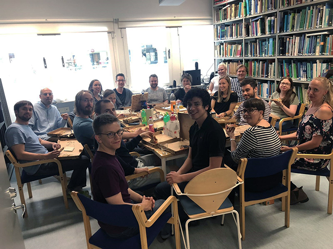

Research highlights and The Cell Fate Team in the media:
18 December 2019
Cecilia’s interviews in The European Research Council Magazine: Rewriting is rewarding - tips from repeat applicants (ERC Magazine, 2019) and Forum Business Magazine: Studerar livets byggklossar (Forum, 2019).
12 December 2019
Cecilia represented the lab in the Biocity Turku Frontiers of Science seminar series (Turku, Finland) with a presentation titled “Mechanics and mechanisms of vascular tissue architecture and homeostasis”.
5 December 2019
Cecilia’s interview in Inblick, magazine of the Åbo Akademi University Foundation: Framtidsvision: en självläkande kropp (Inblick, 2019).
8-9 November 2019
Cecilia represented the lab at the Nordic Organ on Chip symposium (Tampere, Finland) with a presentation titled “A microfluidic oxygen gradient device to assess migrational responses of cancer stem cells”.
1 November 2019
Welcome Hetty Maneschijn, our new postdoctoral researcher at the TU/e Cell Fate lab.
9 October 2019
Thank you to the Jane and Aatos Erkko foundation for awarding Cecilia and the Cell Fate lab two-year funding for the project “AKT-mediated post-translational regulation of NOTCH3 – decoding the notch phosphorylation switchboard for targeted therapies in cancer”.
6-10 October 2019
Tommaso, Freddy, Cecilia, Johanna, Daniel, William, Sebastian, Rasmus, Marika and Oscar represented the lab at Notch Meeting XI (Athens, Greece). Tommaso gave a presentation on “Jagged1-Notch3 lateral induction limits the impact of cell connectivity on Notch signalling in arteries” and Freddy on “Vimentin regulates Notch signaling strength and arterial remodeling in response to hemodynamic forces”. Cecilia took part as a member of the organization committee and as a chair while Johanna, Daniel, William, Sebastian, Rasmus, Marika and Oscar presented posters.
28 August 2019
Notch cruise between Åbo, Finland and Stockholm, Sweden featuring the ÅAU and TU/e Notchies as well as guest stars from TU/e and Karolinska Institute.
27 August 2019
Congratulations to Nicole, Freddy, Adolfo, Tommaso, Oscar, Daniel, Rob, Marika and Cecilia for the publication: Vimentin regulates Notch signaling strength and arterial remodeling in response to hemodynamic stress (van Engeland & Suarez-Rodriguez et al., 2019, Sci Rep). Thank you to all the collaborators!
4-9 August 2019
Tommaso represented the lab at the Gordon Research Conference on Angiogenesis: Growing Organotypically Differentiated Vasculatures from Vascular Sprouts (Newport, USA). He gave a nano-talk presentation on “Experiments and simulations suggest that Jagged1 and Dll4 differently regulate VEGFR expression during angiogenesis” and presented a poster which also won a poster award.
1 August 2019
Welcome Amandine Schmit, our new PhD student at the ÅAU Cell Fate lab.
28 July 2019
Cecilia’s column in Hufvudstadsbladet, the highest-circulation Swedish-language newspaper in Finland: Framtidens medicinska teknologi får kroppen att läka sig själv (Hufvudstadsbladet, 2019).
11 July 2019
Congratulations to Daniel, Christian, Kati, Sebastian and Cecilia for the review: Decoding the PTM-switchboard of Notch (Antfolk et al., 2019, Biochim Biophys Acta Mol Cell Res).
7-10 July 2019
Tommaso represented the lab at the ESBiomech conference (Vienna, Austria) with a presentation titled “Computational analysis of cell-mediated remodeling of collagenous tissues”. He also received a best doctoral thesis award at the event.
13 June 2019
Congratulations to Oscar and Cecilia for the publication: A Supramolecular Platform for the Introduction of Fc-Fusion Bioactive Proteins on Biomaterial Surfaces (Putti et al., 2019, ACS Appl Polym Mater). Thank you to the Patricia Dankers lab for collaboration!
9-11 June 2019
Cecilia and Oscar represented the lab at the 11th European meeting on intermediate filaments (Euro IF; Turku, Finland) as members of the organizing committee. Cecilia also gave a lecture on “Vimentin and matrix remodeling under hemodynamic load”.
24 May 2019
Lab cleaning day at the ÅAU Cell Fate lab followed by pizza and refreshments. 
3 May 2019
Congratulations to Oscar and Cecilia for the publication: Influence of the Assembly State on the Functionality of a Supramolecular Jagged1-Mimicking Peptide Additive (Putti et al., 2019, ACS Omega). Thank you to the Patricia Dankers lab for collaboration!
1 May 2019
Welcome Sami Sanlidag, our new research assistant and soon-to-be PhD student at the ÅAU Cell Fate lab.
11-12 April 2019
Nicole represented the lab at he 14th International symposium on Biomechanics in vascular biology and cardiovascular disease (London, UK) with a presentation titled “Vimentin regulates Notch signaling strength and arterial remodeling in response to hemodynamic forces”.
2 April 2019
Cecilia’s interview by the national broadcasting company YLE and Tuomas Enbuske in an episode of the TV show Fem fenomen: Fem fenomen inom medicin, Reservdelarna (Svenska Yle, Arenan; 2019).
15 February 2019
Thank you to the ÅAU and the Åbo Akademi Foundation for granting the funding for a Centre of Excellence in Cellular Mechanostasis (CellMech) to a team of cell biology research groups lead by Cecilia: CellMech (ÅAU).
18 January 2019
Thank you to the Academy of Finland for awarding research infrastructure funding for the Biocenter Finland consortium, including Cecilia.
3 January 2019
Congratulations to Daniel and Cecilia for the publication: Nestin Regulates Neurogenesis in Mice Through Notch Signaling From Astrocytes to Neural Stem Cells (Wilhelmsson et al., 2019 Cereb Cortex). Thank you to the Milos Pekny lab and all other collaborators!